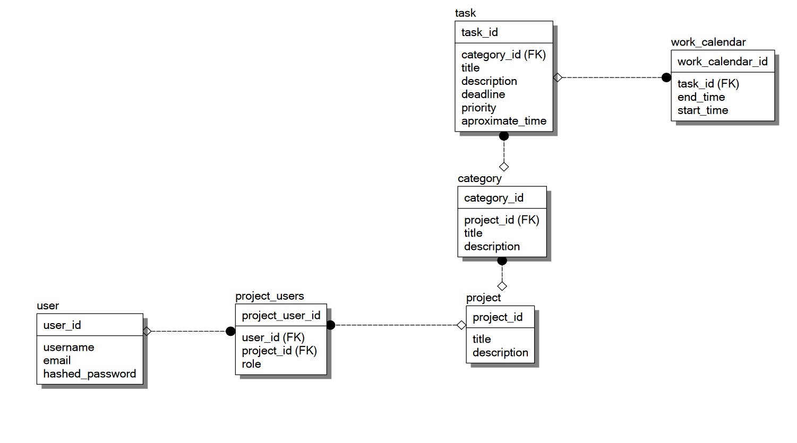

Модели
Схема БД

Код для моделей
from sqlmodel import SQLModel,Field, select, Relationship
import pydantic
from db import get_session_func
from enum import Enum
from typing import Optional, Type, List
import datetime
def is_in_table(model: Type[SQLModel], field, unique_value):
with get_session_func() as session:
statement = select(model).where(field == unique_value)
result = list(session.exec(statement))
return len(result) > 0
class Role(Enum):
admin = 'admin'
viewer = 'viewer'
class Priority(Enum):
low = 0
medium = 1
high = 2
class ProjectUserLink(SQLModel, table=True):
id: int = Field(default=None, primary_key=True)
user_id: int = Field(foreign_key='user.id')
user: 'User' = Relationship()
project_id: int = Field(foreign_key='project.id')
project: 'Project' = Relationship()
role: Role
class UserInProjectForm(SQLModel):
user_id: int
role: Role
class UserSuperBase(SQLModel):
username: str = Field(unique=True)
email: str
@pydantic.field_validator('email')
@classmethod
def validate_email(cls, value: str) -> str:
pydantic.EmailStr._validate(value)
return value
@pydantic.field_validator('username')
@classmethod
def validate_username(cls, value: str) -> str:
if is_in_table(User, User.username, value):
raise ValueError('username is not unique')
return value
class UserBase(UserSuperBase):
hashed_password: str
class UserRegister(UserSuperBase):
password: str
class UserLogin(SQLModel):
username: str
password: str
class UserGet(SQLModel):
username: str
email: str
class UserChangePassword(SQLModel):
current_password: str
new_password: str
new_password_verification: str
class User(UserBase, table=True):
id: int = Field(default=None, primary_key=True)
projects: List['Project'] = Relationship(back_populates='users', link_model=ProjectUserLink)
class ProjectBase(SQLModel):
title: str
description: Optional[str]
class Project(ProjectBase, table=True):
id: int = Field(default=None, primary_key=True)
users: List[User] = Relationship(back_populates='projects', link_model=ProjectUserLink)
categories: List['Category'] = Relationship(back_populates='project')
class ProjectWithCalendarEntries(ProjectBase):
categories: List['CategoryWithEntries']
class CategoryBase(SQLModel):
title: str
description: Optional[str]
class Category(CategoryBase, table=True):
id: int = Field(default=None, primary_key=True)
# отвечает за реальное поле в таблице
project_id: int = Field(foreign_key='project.id')
# отвечает за category.project и project.categories
project: Project = Relationship(back_populates='categories')
tasks: List['Task'] = Relationship(back_populates='category')
class CategoryWithBaseTasks(CategoryBase):
tasks: List['TaskBase']
class CategoryWithEntries(CategoryBase):
tasks: List['TaskWithEntries']
class TaskBase(SQLModel):
title: str
description: Optional[str]
deadline: Optional[int]
priority: Priority
approximate_time: datetime.time
class Task(TaskBase, table=True):
id: int = Field(default=None, primary_key=True)
category_id: int = Field(foreign_key='category.id')
category: Category = Relationship(back_populates='tasks')
calendar_entries: List['CalendarEntry'] = Relationship(back_populates='task')
class TaskGet(TaskBase):
Category: Category
class CalendarEntryBase(SQLModel):
start_time: datetime.datetime
end_time: datetime.datetime
class CalendarEntry(CalendarEntryBase, table=True):
id: int = Field(default=None, primary_key=True)
task_id: int = Field(foreign_key='task.id')
task: Task = Relationship(back_populates='calendar_entries')
class CalendarEntryWithId(CalendarEntryBase):
id: int
class TaskWithEntries(TaskBase):
calendar_entries: List[CalendarEntryWithId]